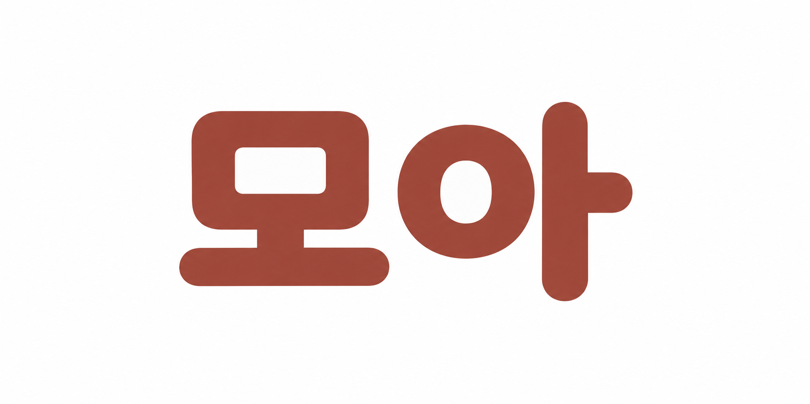
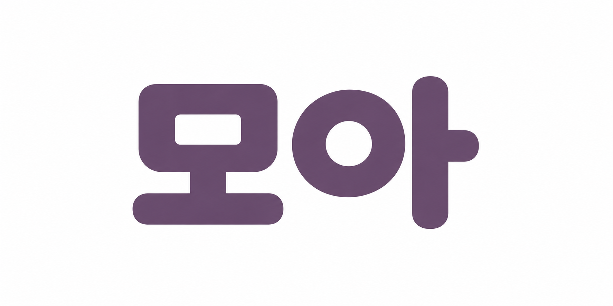
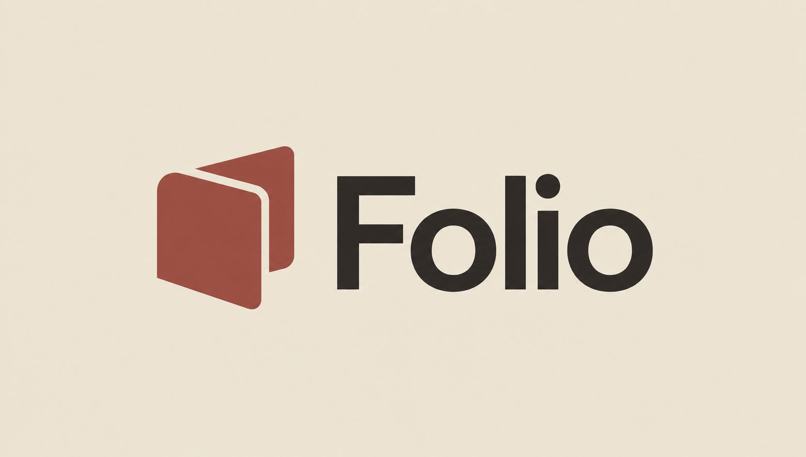
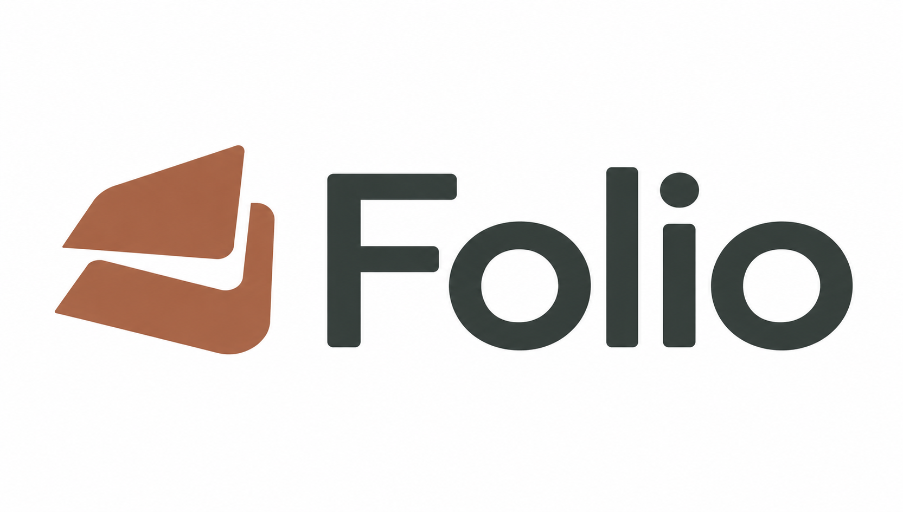

LOGOPIA · 2026-10-01 · 생성 근거
브랜드 로고 출력 검토
같은 제품 브리프를 기존 워크플로와 개선 워크플로에 적용한 제한된 비교 실험입니다. 실제 생성된 원본 6개를 브리프별로 나란히 표시합니다. ‘개선 워크플로’는 변경한 방법의 이름이며, 결과 품질이 더 높다는 판정은 아닙니다.
아직 품질 개선이나 선호 결과를 결론 내리지 않습니다. 사용자 선호 결과는 수집되지 않았습니다. 브리프·방법별 표본은 1개이며, 이 자료만으로 일반적인 품질 향상을 입증할 수 없습니다.
TIDE · 추상 심볼
작은 팀의 일정·교대 조율 서비스입니다. 신뢰감 있고 유연한 인상, 문자가 없는 추상 심볼, 순백색 배경이 공통 요구입니다. 파도·시계·달력·무한대 기호의 직접 묘사는 금지했습니다.
기존 워크플로

작게 보기 · 전체 이미지 폭
개선 워크플로

작게 보기 · 전체 이미지 폭
모아 · 한글 워드마크
성인 한국어 사용자를 위한 독서·개인 기록 앱입니다. 정확히 ‘모아’ 두 글자, 둥글고 친근하면서 차분한 인상, 순백색 배경이 공통 요구입니다. 별도 책 아이콘·캐릭터·유아적인 장식은 금지했습니다.
기존 워크플로


작게 보기 · 전체 이미지 폭
개선 워크플로


작게 보기 · 전체 이미지 폭
Folio · 심볼과 영문 이름
성인 직장인·창작자를 위한 독립 문구 브랜드입니다. 종이의 겹침이나 접힘에서 출발한 작은 심볼과 정확한 ‘Folio’ 이름을 나란히 놓습니다. 배경은 불투명해야 하지만 색은 지정하지 않았습니다.
기존 워크플로


작게 보기 · 전체 이미지 폭
개선 워크플로


작게 보기 · 전체 이미지 폭
읽으실 때 참고해 주세요
- 큰 이미지의 프레임 크기와
object-fit: contain표시 규칙은 같습니다. 원본의 종횡비와 여백이 달라 실제 로고가 차지하는 면적까지 같아지는 것은 아닙니다. - 작게 보기는 원본 여백을 포함한 전체 캔버스의 CSS 표시 폭입니다. 로고 외곽을 추출한 32px 심볼 또는 96px 워드마크 검증과는 다릅니다. 작은 화면에서는 화면 폭에 맞춰 더 작게 표시될 수 있습니다.
- 브리프와 생성 횟수는 고정하지만, 콘셉트 구체화·팔레트·생성 프롬프트는 각 워크플로의 일부입니다. 이미지 도구에는 모델·시드·샘플링 설정 제어가 노출되지 않았습니다.
- TIDE와 모아의 순백색 배경 요구, Folio의 배경색 미지정 조건을 구분해 검토해야 합니다. Folio의 종이색 배경 선택 자체를 명시적 배경 요구 위반으로 보지 않습니다.
- 기술 측정은 파일·픽셀의 관찰 기록입니다. 브랜드 적합성, 독창성, 글자 완성도 또는 사용자 선호의 증거를 대신하지 않습니다.
- 사용자 선호 결과는 수집되지 않았으며, 이 페이지는 미적 승자나 품질 향상을 선언하지 않습니다.
- 공식 Codex Computer Use를 사용할 수 없어 실제 브라우저 렌더링과 CSS 표시 크기는 검증하지 못했습니다. 명시한 크기는 HTML·CSS 설정값입니다.